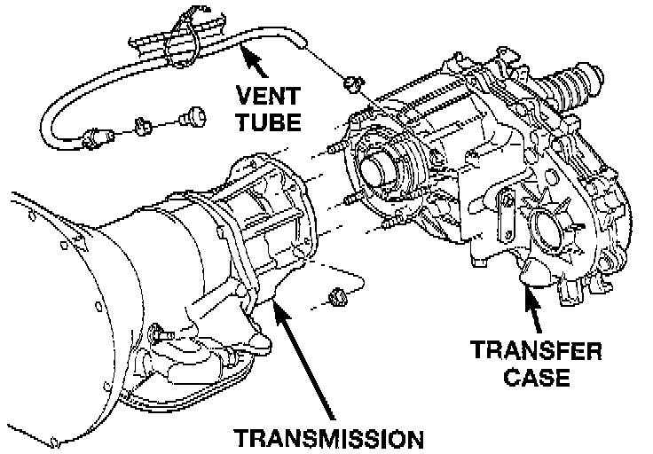

Removal and Installation

REMOVAL
1. Shift transfer case into Neutral.
2. Raise vehicle.
3. Drain transfer case lubricant.
4. Mark front and rear propeller shaft yokes for alignment reference.
5. Support transmission with jack stand.
6. Remove rear crossmember, or skid plate.
7. Disconnect front/rear propeller shafts at transfer case.
8. Disconnect vehicle speed sensor wires.
9. Disconnect transfer case linkage rod from range lever.
10. Disconnect transfer case vent hose and indicator switch harness, if necessary.
11. Support transfer case with transmission jack.
12. Secure transfer case to jack with chains.
13. Remove nuts attaching transfer case to transmission.
14. Pull transfer case and jack rearward to disengage transfer case.
15. Remove transfer case from under vehicle.
INSTALLATION
1. Mount transfer case on a transmission jack.
2. Secure transfer case to jack with chains.
3. Position transfer case under vehicle.
4. Align transfer case and transmission shafts and install transfer case on transmission.
5. Install and tighten transfer case attaching nuts to 35 Nm (26 ft. lbs.) torque.
6. Connect vehicle speed sensor wires, and vent hose.
7. Connect indicator switch harness to transfer case switch, if necessary. Secure wire harness to clips on transfer case.
8. Align and connect propeller shafts. Tighten shaft attaching bolts to 19 Nm (170 inch lbs.) torque.
9. Fill transfer case with correct fluid.
10. Install rear crossmember, or skid plate. Tighten crossmember bolts to 41 Nm (30 ft. lbs.) torque.
11. Remove transmission jack and support stand.
12. Connect shift rod to transfer case range lever.
13. Adjust transfer case shift linkage.
14. Lower vehicle and verify transfer case shift operation.